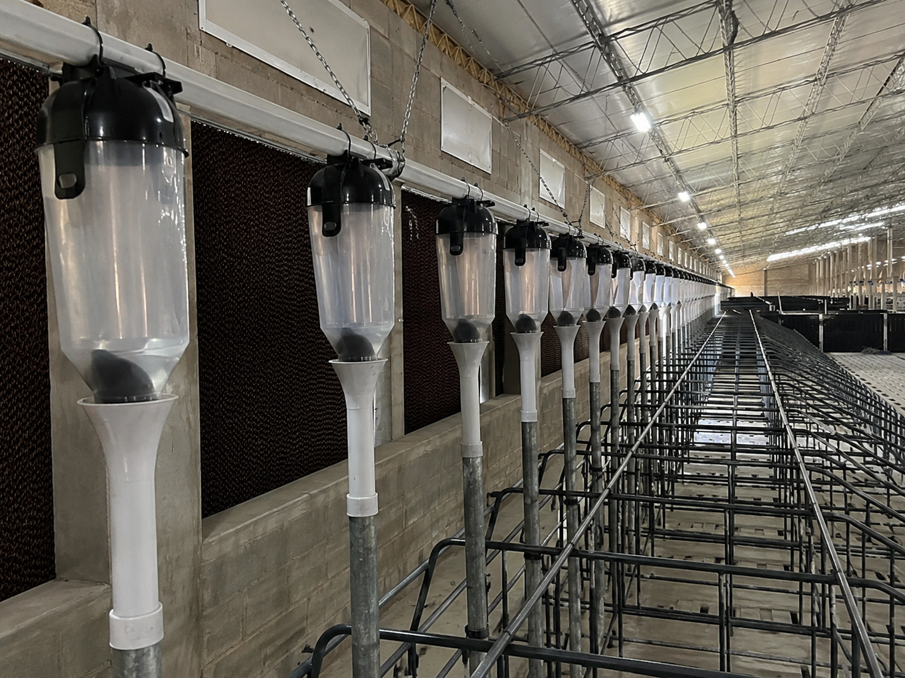
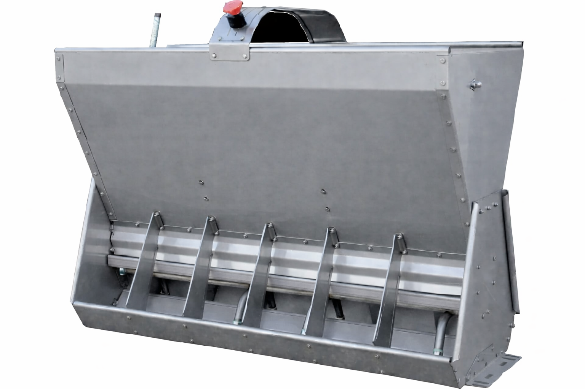
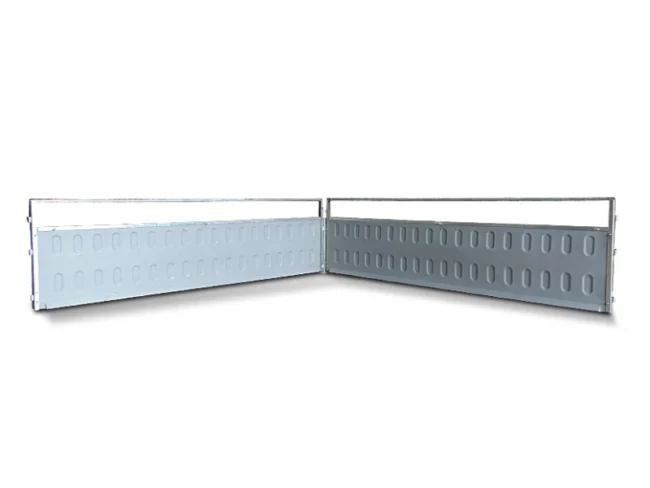
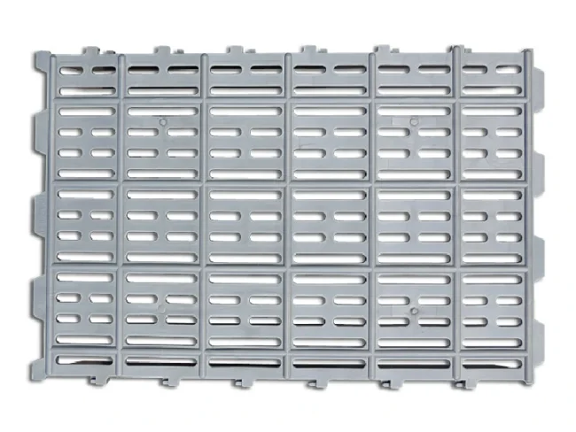
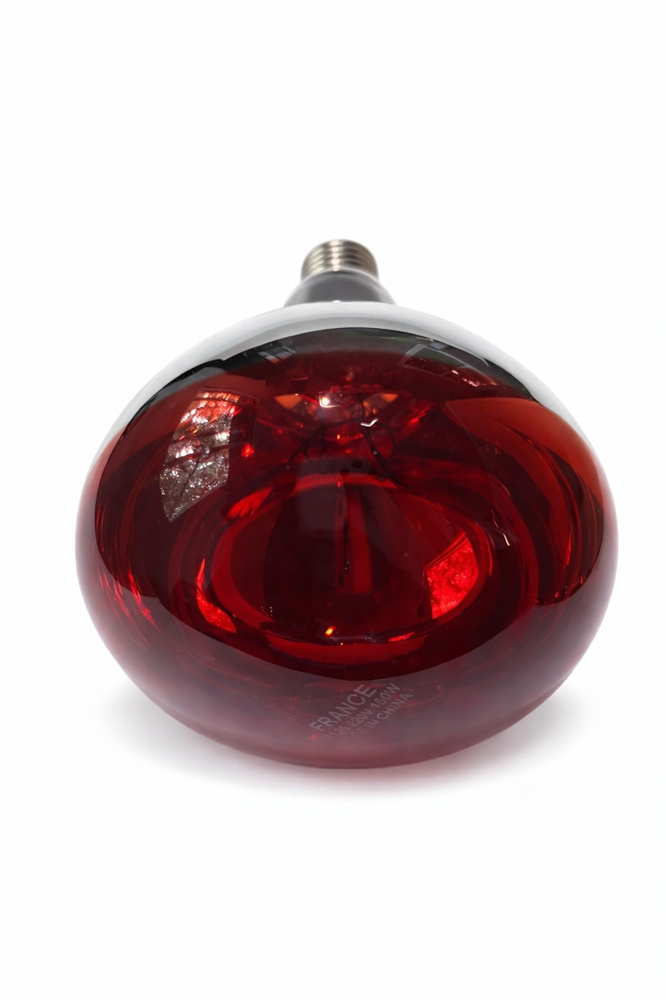
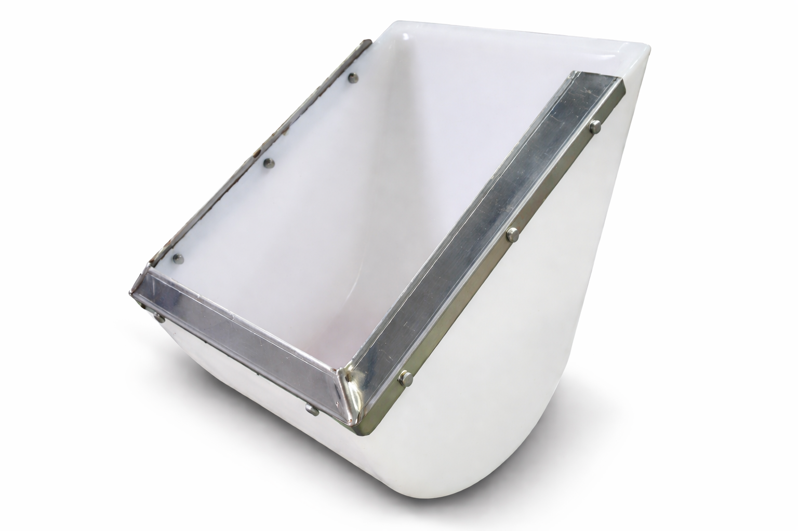
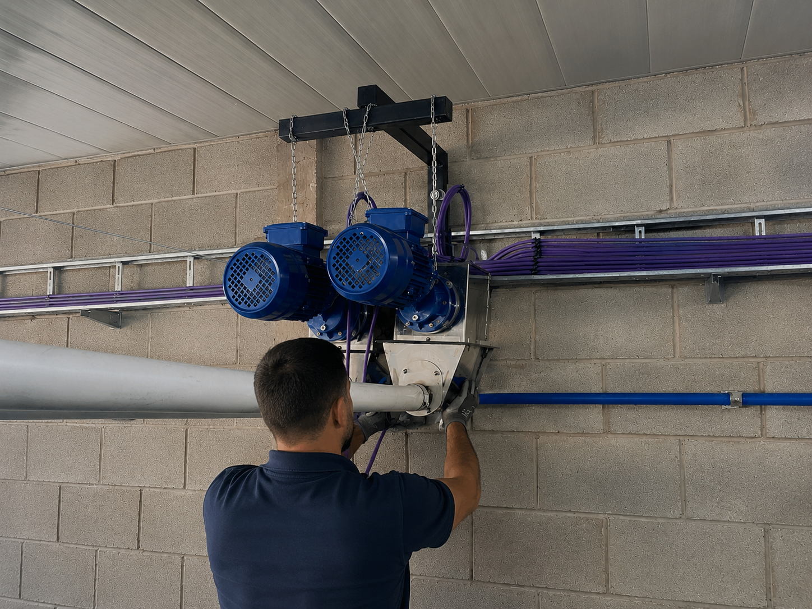

Equipamiento para Porcicultura
GESTACIÓN • MATERNIDAD
RECRÍA • ENGORDE
Diseñamos e instalamos equipamiento porcino para granjas modernas.
Consultanos y potenciá tu granjaEtapas de producción porcina
Equipamiento diseñado para cada fase del sistema productivo.
Gestación
Sistemas que garantizan bienestar de la cerda y eficiencia reproductiva.
Maternidad
Equipamiento diseñado para mejorar supervivencia y manejo de lechones.
Recría
Ambientes controlados que favorecen crecimiento uniforme y sanidad.
Engorde
Infraestructura optimizada para conversión alimenticia y productividad.
Sistemas de producción porcina
Equipamiento pensado para mejorar eficiencia, bienestar animal y manejo diario en granjas porcinas modernas.

Sistema de alimentación
Distribuye el alimento de forma pareja, mejora la conversión alimenticia y reduce el desperdicio.

Sistema de climatización
Mantiene la temperatura ideal dentro del galpón, favoreciendo el bienestar animal y el rendimiento productivo.

Sistema de ventilación
Renueva el aire, controla la humedad y reduce gases para un ambiente sanitario óptimo.
Equipamiento destacado – Porcicultura
Algunos de los productos más utilizados en granjas porcinas.

Comedero húmedo/seco 6 bocas
Optimiza el consumo y reduce el desperdicio de alimento.

Divisorio para destete
Organización eficiente de corrales según tamaño y edad.

Pisos para lechón y madre
Mayor higiene, seguridad y confort para todas las etapas.

Jaula regulable
Ajustable según el tamaño de la cerda, ideal para maternidad.

Lámpara infrarroja 150W / 250W
Fuente de calor para lechones en maternidad. Mejora el confort térmico durante los primeros días de vida.

Batea para jaula regulable
Polietileno de alta densidad con protección UV y sistema volcable que facilita la limpieza en maternidad.
Servicios
Acompañamos tu proyecto desde el diseño hasta la puesta en marcha.

Diseño y asesoramiento técnico
Diseño y planificación de granjas porcinas, optimizando espacio y eficiencia productiva.

Instalación de equipamiento
Instalación profesional adaptada a cada sistema productivo.

Obra civil
Coordinación y ejecución de obras civiles para granjas porcinas.